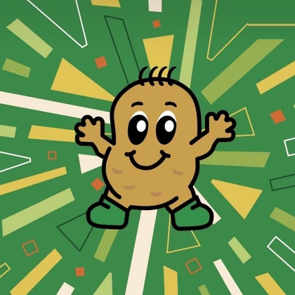
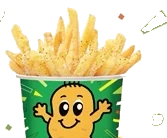

薯條小遊戲
掃 QR code 就能玩，免安裝免登入。選一款開始。土豆大冒險是橫向打怪升級。土豆卡丁車是 3 圈競速。薯條小店長不限時間，3 桌客人走掉就結束。土豆跑酷會一直跑到撞上障礙物。接薯條不限時間，接到燒焦食材就結束。口味配對限時完成。
土豆大冒險 新
橫向打怪升級。揮薯條劍、放風味粉大招，打贏焦黑大薯王就進下一關。
開始玩
土豆卡丁車
3 圈競速。車子自己加速，左右轉向、吃道具、踩加速帶，搶先衝線。
開始玩

薯條小店長
下鍋、搖粉、做飲料，在客人離開前把餐點送對。不限時間，3 桌客人走掉就結束。
開始玩

土豆跑酷
左右滑換道，上滑跳、下滑翻滾。避開薯條、雞米花、捲捲薯和飲料，收集風味粉。
開始玩
接薯條
左右滑動接住薯條、捲捲薯、雞米花和風味粉。不限時間，接到燒焦的就結束。
開始玩
口味配對
翻開相同的風味粉圖示，在時間內完成配對。
開始玩
這是非官方介紹頁的小遊戲，不是 Potato Corner 總部的官方活動。沒有抽獎、優惠券或兌換獎品，分數只存在你的手機瀏覽器。
高雄漢神巨蛋店、夢時代店
回菜單與門市介紹